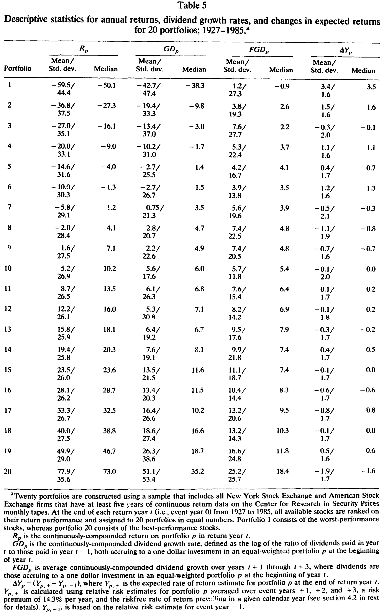
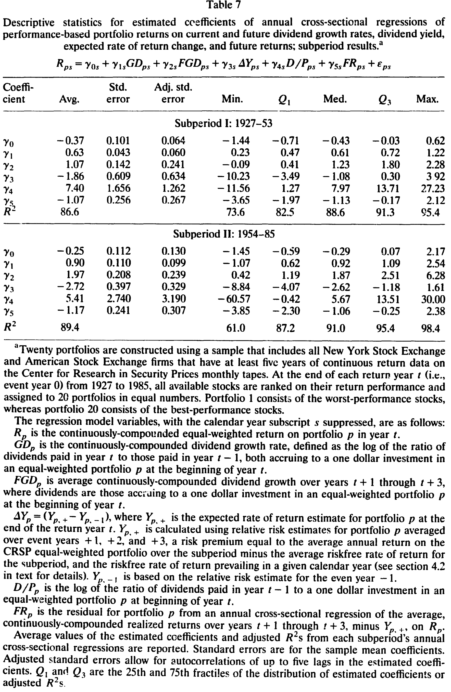
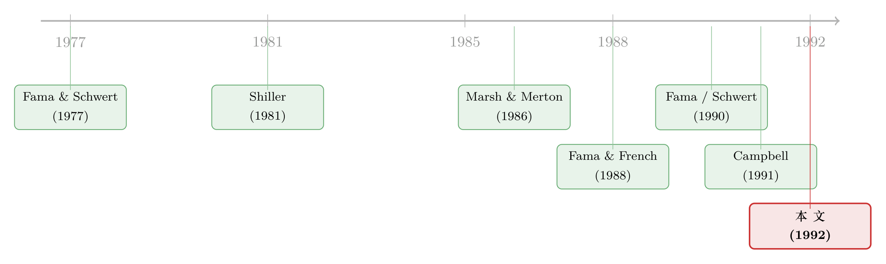

股价的『过度波动』，也许只是我们没读懂它对股利的预期
本文读的是 Kothari & Shanken (1992, Journal of Financial Economics)：把已实现的股利增长拆成「预期」与「未预期」两部分，再用股利收益率、投资增长率和未来回报去逼近那个看不见的「预期修正」——一个极简的设定就能解释超过 70% 的年度股票回报变异；放到 20 个按业绩排序的组合上做横截面检验，这个数字升到了近 90%。结论是：股市的起落，大体上是理性经济行为的结果，而非系统性的「错误定价」。
1 一个让人不安的事实
先从一个让很多人睡不着觉的结论说起。
1981 年，Shiller 写下那篇著名的论文，假设预期回报率不随时间变化，他发现：股票价格相对于事后真实的股利流，波动得太厉害了 [Shiller (1981)；另见 Leroy and Porter (1981)]。价格的方差，远远超过了它本该锚定的那个现值的方差。如果股价等于未来股利的折现，而折现率又是常数，那它凭什么抖成这样？于是「股市里有泡沫、有狂热（fads）」这个说法，开始有了学术上的体面。
到了 1990 年，Shiller 把话说得更重。他强调：年度股票回报中的绝大部分，根本无法被同期的股利变化解释；更要命的是，把滞后的股利变化也加进去，解释力几乎没有提升。于是他下了一个相当强的判断——
「任何对股利现值的线性预测模型，只要它是建立在这些对数实际股利之上的，就都不会比单纯用价格变化拟合得更好。」[Shiller (1990, p. 59)]
这句话的杀伤力在于：它几乎堵死了「用股利信息解释股价」这条路。如果连最聪明的线性模型都拟合不动，那剩下的，似乎就只能是「狂热」了。
接着，一个自然的问题是：真的是这样吗？
Kothari 和 Shanken 这篇论文，正是冲着这句话去的。他们的回答很干脆：如果你用的是已实现的股利变化，那确实解释不了多少；但如果你换一个东西——用一组变量去逼近市场对未来股利的预期及其修正——故事就完全反过来了。
2 真正的麻烦：你量错了变量
要理解他们怎么翻的盘，得先想清楚一件事：为什么「用同期股利解释回报」会失败？
这里的关键，不是市场不理性，而是一个被反复低估的计量误差问题（errors-in-variables）。
理性市场里，价格反映的是对未来现金流的预期修正。今年的回报之所以为正，是因为今年到来的信息，让市场上调了对未来一连串股利的预期。可是研究者手里拿到的，是事后已经实现的股利增长率。这两者之间隔着一层：
- 已实现的当期股利增长
GD里，有一部分是早就被预期到的（即E_{t-1}(GD)），这部分跟今年的「新信息」无关； - 而未来几年的已实现股利增长
FGD里，又混进了回报年之后才到来的、与今年回报无关的信息。
把回报对这些事后变量做回归，前者的「已预期成分」和后者的「未预期成分」就成了测量误差，把回归的解释力系统性地往下压。所以——哪怕市场完全理性、哪怕已实现股利平均而言就等于其预期值，已实现股利的解释力也注定有限。Fama (1990) 独立地指出过同一个道理：用更长区间（年度而非月度）的回报，能缓解这个偏差，因为长区间更能容纳「预期在多个时点被修正」这件事。
这正是全文的「核心张力」：Shiller 看到的低解释力，未必是市场疯了，而可能只是我们用错了尺子——用「事后实现」去量「事前预期」，量出来的当然是一团噪声。
那么，自然的下一步是：能不能把已实现股利里那层测量误差洗掉？
3 模型：把回报拆成「预期」与「修正」
要洗掉它，先得有一个框架告诉你，回报到底由哪些成分构成。作者借用了 Campbell (1991) 的方差分解思路，搭了一个极简模型。
记 R 为连续复利回报，D_t 为第 t 年（「回报年」）支付的股利，连续复利股利增长率 GD = ln(D_t / D_{t-1})，未来第 t+j 年的增长率记为 FGD_j。假设从第 t+k 年起，预期增长稳定在常数 g；并且先假设预期回报率不随时间变化。那么回报可以写成：
这个式子的直觉很美：今年的回报，等于「本就预期到的回报」E(R)，加上「当期股利的意外」U(GD)，再加上「对未来若干年股利预期的修正」按 ρ 折现后的总和。
它和静态的 Gordon (1962) 增长模型的区别恰恰在第三项。在 Gordon 世界里，ρ = exp(g − r)，而且 ΔE(FGD_j) = 0——股利不会被「逐步」调整。而 (1) 式允许股利对新信息渐进式地响应，所以 ΔE(FGD_j) 可以非零。这更贴近真实的管理层行为 [Lintner (1956)；Fama and Babiak (1968)]：公司不会因为今年利润好就一次性把股利提到位，而是慢慢往上调。
作者的目标不是去正式检验模型 (1)，而是用它来指导选变量。由于第四年及以后的未来股利增长在经验上几乎不增加解释力，他们令 k = 3，写出可估计的回归：
$$ R = a + a_0\,U(GD) + \sum_{j=1}^{3} a_j\,\Delta E(FGD_j) + e $$
这是 (2) 式。但 U(GD) 和 ΔE(FGD_j) 都含有「预期」，没法直接观测。于是退而求其次，用已实现的当期与未来股利增长率去替代：
$$ R = a + a_0\,GD + \sum_{j=1}^{3} a_j\,FGD_j + \text{error} $$
这就是 (3) 式——也正是 Shiller 式的「用已实现股利解释回报」。作者先报告了它的结果：在 1927–1988 年的等权指数上，调整后 R² 约为 51%，其中绝大部分解释力来自 FGD_1（下一年的股利增长，与回报的相关系数高达 0.70），而 FGD_2 的系数也显著为正（p 值 0.03）。
51% 已经不算低了——它明显优于此前基于股利或工业生产的结果（Schwert (1990) 报告工业生产在 1926–52 年只解释 25%、1953–88 年解释 41%）。但 (3) 式仍然带着第 2 节说的那层测量误差。真正关键的一步，是去补上 (2) 与 (3) 之间的缺口。
4 真正关键的一步：给「预期」找三个替身
怎么补？作者的做法很巧：既然测量误差是「已预期成分」和「未来的未预期成分」，那就找一些与这些误差相关、但与真实变量无关的代理变量，把它们一并塞进回归。这等价于一个两阶段过程——先用代理变量回归掉股利增长里的可预测部分，再用残差去解释回报——但单一扩展回归更稳健，所以他们用后者。
具体而言，对 k = 1 的情形，(2) 式可以等价改写成：
$$ R = a + a_1\,GD + a_2\,FGD + b_1\,E_{t-1}(GD) + b_2\,[\,FGD - \Delta E(FGD)\,] + e $$
其中 b_1 = -a_1，b_2 = -a_2。作者在附录中证明：只要代理变量与测量误差相关、与 (2) 式中的真实变量无关，把它们加进去就会抬高 R²，并且这个 R² 仍是 (2) 式真实解释力的一个下界。换句话说，他们报告的数字是保守的。
那么，给「预期」找的三个替身是谁？
第一个：股利收益率 D/P。 在有效市场里，期初（t-1）对未来增长的预期，应当已经反映在 t-1 的价格里——所以滞后一期的股利收益率，是 E_{t-1}(GD) 和 E_{t-1}(FGD) 的天然代理。有意思的是，这也顺带解释了一桩老公案：为什么 Fama and French (1988) 发现 D/P 能预测两到四年的回报，可它和年度回报的简单相关却很低？因为 D/P 同时在替「预期股利增长」和「时变预期回报」打工，两份工作彼此干扰，简单相关自然被压低了。（关于股利收益率究竟能不能预测回报，可参见《股利收益率到底能不能预测收益？》。）
第二个：投资增长率 GI。 这是全文最有想象力的一笔。Barro (1990) 证明，年度（私人非住宅国内）投资增长率里，近四分之三是由年初就已有的信息决定的——投资是个分阶段、有黏性的过程，沉没成本一旦投下，企业就有动机把项目做完。既然投资增长大体是预先决定的，而投资与股利又都对「好消息」做出反应，那么同期测得的 GI 就能充当预期股利增长的代理。当然，方向并不先验确定：好消息既可能让股利和投资同涨，也可能因为外部融资有成本，企业反而压低股利、把内部资金留给投资 [Myers and Majluf (1984)；Jensen (1986)]。这正好是个待检验的经验问题。
第三个：未来回报。 用它来控制「回报年之后才到来、却混进了未来已实现股利」的那部分信息——也就是把 FGD 里的「未预期成分」清理掉。
于是反转出现了：把 D/P、GI 和未来回报这两组变量加进去之后，股利增长率对年度回报的时间序列解释力，从约 50% 一路升到了 72.1%。Shiller 说「线性模型拟合不动」，可这里的线性模型拟合得相当好——差别只在于，它拟合的不是已实现股利，而是对未来股利的预期。
5 那些「该有用」的变量，为什么没用？
到这里，一个挑剔的读者会问：会不会是 GI、未来回报这些变量本身在「替宏观经济变量打工」？毕竟 Fama (1990)、Schwert (1990) 都强调工业生产和预期回报变量的解释力。
作者的回答是逐一对质。当股利增长率与工业生产增长率同时进入回归时，工业生产的增量解释力微乎其微，而股利依然显著（见表 5）。这其实很合理：股利是一个被管理层「打理」过的序列，它系于公司对长期盈利能力的预期，比工业生产这种实时产出更能浓缩「关于未来现金流的判断」。同样地，Fama (1990) 和 Schwert (1990) 里那些预期回报变量，加进作者的模型后也几乎不添砖加瓦——因为它们的效应早已被股利增长率和预期股利增长的代理吸收了。这背后又有一层经济联系：Fama and French (1989)、Chen (1991) 都发现，预期回报与商业景气反向而动，所以现金流度量和预期回报度量天然高度相关，彼此替代。

Table 5
换句话说，不是这些宏观变量没信息，而是股利已经把这些信息「讲完了」。
6 横截面的加冕：近 90%
时间序列上 72% 已经很说明问题，但作者还想知道：这套逻辑能不能解释横截面上的回报差异？
他们的设计是：每年把所有可得股票按当年回报表现排序，分成 20 个组合。一个直接动机是，这样能观察那些经历了极端回报的组合，到底发生了什么。DeBondt and Thaler (1985, 1987)、Chopra, Lakonishok, and Ritter (1992) 都主张，极端回报反映的是投资者过度反应。如果真是过度反应，那么极端组合的股利不该跟着回报一起极端地变。
但数据说的是另一回事：极端业绩的组合，经历的是与其回报表现方向一致、而且看起来是永久性的股利变化。同时，与 Chan (1988)、Ball and Kothari (1989) 一致，相对风险（因而预期回报）的变化，总体上与组合业绩反向——赢家组合的风险/预期回报往下走，输家组合往上走。把股利变量和预期回报变量放在一起，它们解释了横截面组合回报变异的近 90%（见表 7）。

Table 7
这是个很强的反击。「过度反应」假说预测极端回报应当随后反转、且不伴随对等的基本面变化；可这里看到的，是基本面（股利）实打实地、永久性地跟着动了。这与「股价大体上是理性定价的结果」更相容。（关于把回报拆成现金流与折现率两块的还原思路，亦可参见《R² 说的不是「现金流」：一道把收益拆成三份的还原术》。）
7 文献脉络
把这条线捋一捋，会看到一场持续了十几年的拉锯。
最早，Fama and Schwert (1977) 这一脉关心的是预期回报的变化能否解释回报变异。紧接着，Shiller (1981)（与 Leroy and Porter (1981)）用方差边界检验掀起了「股价过度波动」的风暴，矛头直指市场理性；Marsh and Merton (1986) 等人则从股利行为出发予以反驳。另一条支线上，Fama and French (1988) 发现股利收益率能预测长期回报，把「股利—回报」的关系重新拉回视野。
然后，1990 年前后出现了一波「现金流 + 预期回报一起上」的实证：Fama (1990)、Schwert (1990) 用工业生产和预期回报变量解释回报，并强调用长区间回报来缓解测量误差。与此同时，Campbell (1991) 给出了回报的方差分解框架——本文的模型 (1) 正是从这里长出来的。

本文站在这条脉络的交汇点上：它接过 Campbell (1991) 的分解、Fama (1990) 的「长区间」直觉，又用 Barro (1990) 的投资黏性给「预期股利增长」找到了一个实证代理，最终把 Shiller (1990) 那句「线性模型拟合不动」的论断，在数据上反驳了过去。
8 评论与延伸（Q&A + 研究方向）
(a) 几个可能的疑问
Q：72% 这个 R² 是不是「用未来变量解释当下」的循环论证？
部分担忧是合理的，但作者用了两道防线。其一，他们在附录中证明，加入代理变量后的
R²仍是真实模型 (2) 的下界——是保守估计而非夸大。其二，未来回报和未来股利增长进入回归是有理论依据的：它们是用来「净化」已实现股利里那层测量误差的，而非凭空提升拟合。不过，使用估计残差和未来信息确实会让系数估计与标准误的解释变得微妙，这一点作者自己也承认。
Q：这能否「证明」市场是理性的、不存在狂热？
不能，作者措辞很谨慎：结果「并不排除狂热的可能」，只是说明一个简单的理性模型就能解释大部分回报变异，因而与「股市起落主要是理性经济行为」相容。它削弱的是「必须靠非理性才能解释」这一立场，而非给理性下定论。
Q：为什么投资增长 GI 能当预期股利的代理，这不奇怪吗？
关键在 Barro (1990) 的发现：年度投资增长近四分之三是预先决定的（沉没成本 + 分阶段执行带来的黏性）。既然投资在年初就大体定了，而投资与股利又都对同一批「关于长期盈利」的信息反应，那么同期的
GI就携带了「期初对股利增长的预期」。但方向不唯一——融资有成本时，企业可能压股利保投资——所以这是经验问题。
Q：横截面近 90% 是不是因为组合本身就是按回报排序构造的，存在机械相关？
这是最该警惕的地方。按当年回报排序分组，会把当年回报的横截面差异最大化，回归的因变量天然「拉开了」。但作者的论点不在
R²数字本身，而在结构：极端组合伴随着方向一致、且永久性的股利变化，以及反向的风险/预期回报变化——这两件事是「过度反应」假说预测不出来的。
Q：股利里没算进股票回购，会不会有偏？
会，作者明确指出：忽略回购使得「已实现股利增长」成为真实派现率的噪声估计，这只会削弱解释力。也就是说，真实的现金流—回报关系可能比 72%/90% 还要紧。这反而让结论更稳。
Q：这和「股利收益率预测回报」是一回事吗？
不是。
D/P在本文里扮演的是预期股利增长的代理（期初预期已反映在价格里），而不是预测变量。作者甚至用这一身份去解释：为什么D/P能预测长期回报、却和年度回报简单相关很低——因为它同时替「预期增长」和「时变预期回报」两件事打工，互相干扰。
(b) 几个可能的研究问题与提案
1. 把同一套「预期分解」搬到公司债回报上。
【经济故事】信用利差的变动，理论上同样来自「对未来现金流（违约/回收）的预期修正」与「折现率/风险溢价的变化」两块。本文把股票回报拆成预期与未预期股利，那么债券回报能否被拆成「对未来违约率的预期修正」+「信用风险溢价变动」？这能直接回应「信用利差之谜」里那块说不清的成分。
【可行性】中。需要 TRACE 交易数据 + 评级迁移 + 发行人基本面（可用 Compustat）。识别难点在于给债券找一个像 GI 那样「预先决定、又与预期现金流相关」的代理（如违约前的投资/杠杆动态）。doable，但代理变量的构造是核心挑战。
2. 外资持有人是否改变了「股利—回报」关系的强度？
【经济故事】如果外资更偏好「派现可预测、盈利透明」的公司，那么外资持股高的股票，其回报或许更能被预期股利变量解释（信息环境更干净）；反之，若外资是「追涨」的情绪交易者，则可能引入与基本面无关的回报变异，压低本文那类模型的 R²。
【可行性】中。需要跨国的外资持股数据（如 FactSet/EPFR）+ 各国股利数据。识别可借「可投资度（investability）」放开作为外生冲击。挑战在于股利与外资持股的内生性。
3. 回购时代，本文的解释力是上升还是下降？
【经济故事】1990 年代后回购大幅替代了现金股利。如果用「股利 + 回购」构造的总派现率，本文模型的解释力是否会显著超过仅用股利的版本？这能直接量化「忽略回购」带来的低估有多大。
【可行性】高。Compustat 有回购数据，CRSP 有回报，复制本文回归即可。最 doable 的一个延伸，且有明确的可证伪假设（总派现率版本 R² 应高于纯股利版本）。
4. 横截面检验里的「过度反应 vs 理性」之争，用更长样本重做。 【经济故事】本文用 20 个回报排序组合反驳过度反应。但 DeBondt-Thaler 之争至今未平。用 1990 年后的数据、控制规模/价值/动量等已知因子后，极端组合的股利是否仍呈现「方向一致且永久」的变化？ 【可行性】高。数据齐备（CRSP + Compustat）。识别清晰，是一个干净的复制—扩展研究。
5. 把 ρ 和 k 当作可估参数，而非先验设定。
【经济故事】本文为了简洁直接令 k = 3、把 ρ 当常数。但折现因子 ρ 本身应随预期回报变化，k（预期修正的「半衰期」）也可能随行业/周期而变。把它们结构化估计出来，或许能揭示「股利预期被修正的速度」如何随宏观状态变化。
【可行性】低到中。需要更强的结构假设和非线性估计，识别脆弱；但若能做出来，理论含义丰富。
9 参考文献（含我的评判）
我的判断是：这篇论文的真正贡献，不在那个漂亮的 72%/90%，而在它把「Shiller 困境」重新诊断为一个测量误差问题。它没有去否认价格波动很大，而是指出——用事后实现的股利去量事前预期，本来就量不准；一旦换上 D/P、GI 和未来回报这三个替身，被压低的解释力就回来了。这是一个方法论上的「换尺子」动作，干净、可证伪，且把若干零散的实证发现（D/P 的预测力之谜、产出变量的解释力、过度反应假说）统一在了同一个框架下。
对识别的担忧有二。其一，横截面那个近 90% 必须谨慎解读：按当年回报排序分组本身就放大了因变量的离散度，R² 的绝对水平不宜过度解读，真正有说服力的是「极端组合伴随永久性股利变化」这一结构性证据。其二，把未来回报与未来股利增长放进回归，再辅以估计残差，会让系数与标准误的统计性质变得微妙——作者用附录的下界结果做了部分辩护，但有限样本下的偏差仍值得警惕。
后续我最想看到的，是把这套「预期分解」从股票推到信用市场：如果债券回报也能被「对未来违约的预期修正」解释掉大半，那么「信用利差之谜」里那块神秘的非违约成分，或许也只是另一次「量错了变量」。（在折现率作为资产定价中心议题的更大图景下，可一并参见《贴现率：资产定价的中心议题》。）
References
- Barro, R. J. (1990). The stock market and investment. Review of Financial Studies 3, 115–131.
- Ball, R. and S. P. Kothari (1989). Nonstationary expected returns: Implications for tests of market efficiency and serial correlation in returns. Journal of Financial Economics 25, 51–74.
- Campbell, J. Y. (1991). A variance decomposition for stock returns. The Economic Journal 101, 157–179.
- Chan, K. C. (1988). On the contrarian investment strategy. Journal of Business 61, 147–163.
- Chen, N. (1991). Financial investment opportunities and the macroeconomy. Journal of Finance 46, 529–545.
- Chopra, N., J. Lakonishok, and J. R. Ritter (1992). Performance measurement methodology and the question of whether stocks overreact. Journal of Financial Economics, forthcoming.
- De Bondt, W. and R. Thaler (1985). Does the stock market overreact? Journal of Finance 40, 793–805.
- Fama, E. F. (1990). Stock returns, expected returns and real activity. Journal of Finance 45, 1089–1108.
- Fama, E. F. and H. Babiak (1968). Dividend policy: An empirical analysis. Journal of the American Statistical Association 63, 1132–1161.
- Fama, E. F. and K. R. French (1988). Dividend yields and expected stock returns. Journal of Financial Economics 22, 3–25.
- Fama, E. F. and K. R. French (1989). Business conditions and expected returns on stocks and bonds. Journal of Financial Economics 25, 23–49.
- Fama, E. F. and G. W. Schwert (1977). Asset returns and inflation. Journal of Financial Economics 5, 115–146.
- Gordon, M. J. (1962). The savings, investment, and valuation of a corporation. Review of Economics and Statistics 44, 37–51.
- Jensen, M. C. (1986). Agency costs of free cash flow, corporate finance and takeovers. American Economic Review 76, 323–329.
- Kothari, S. P. and J. Shanken (1992). Stock return variation and expected dividends: A time-series and cross-sectional analysis. Journal of Financial Economics 31, 177–210.
- Leroy, S. F. and R. D. Porter (1981). The present value relation: Tests based on implied variance bounds. Econometrica 49, 555–574.
- Lintner, J. (1956). Distribution of incomes of corporations among dividends, retained earnings and taxes. American Economic Review 46, 97–113.
- Marsh, T. A. and R. C. Merton (1986). Dividend variability and variance bounds tests for the rationality of stock market prices. American Economic Review 76, 483–498.
- Myers, S. C. and N. S. Majluf (1984). Corporate financing and investment decisions when firms have information that investors do not have. Journal of Financial Economics 13, 187–222.
- Schwert, G. W. (1990). Stock returns and real activity: A century of evidence. Journal of Finance 45, 1237–1257.
- Shiller, R. J. (1981). Do stock prices move too much to be justified by subsequent changes in dividends? American Economic Review 71, 421–436.
- Shiller, R. J. (1990). Market volatility and investor behavior. American Economic Review 80, 58–62.